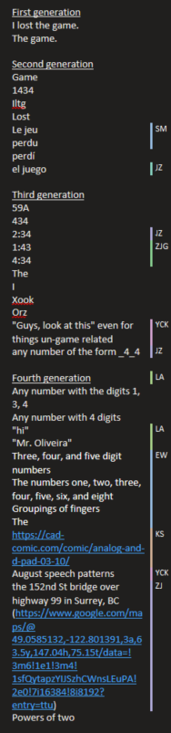

1434 is a reference to "I lost the game".
Popular in the competition math community, especially on AoPS.
1434 references how many characters are in each word of "I lost the game". It is classified by my friends as a
second generation stimuli of losing the game.
